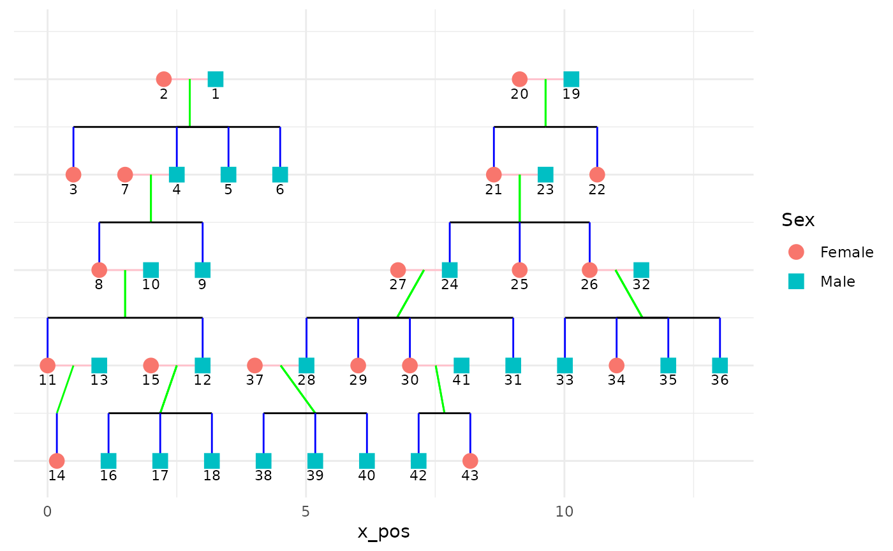

library(tidyverse)
library(ggplot2)
library(BGmisc)
library(ggBGmisc)
library(ggrepel)
data("potter")
ds_df <- ds <- ped2fam(potter, famID = "famID", personID = "personID") %>%
select(-famID.y) %>%
rename(
famID = famID.x,
generation = gen
)
ds <- calculateCoordinates(ds, personID = "personID", momID = "momID", dadID = "dadID", code_male = 1) # %>%
connections <- calculateConnections(ds)
ggplot(ds, aes(x = x_pos, y = y_pos)) +
geom_point() +
geom_text(aes(label = personID), hjust = 0, vjust = 0) +
theme_void()
plotPedigree(ds, # personID = "personID",
# momID = "momID",dadID = "dadID",
code_male = 1
) %>% suppressMessages()
## named list()
data("hazard")
ds_hz <- ds <- ped2fam(hazard, famID = "famID", personID = "ID") %>%
select(-FamID) %>%
rename(
personID = ID
) %>%
recodeSex(recode_male = 0)
# mutate (y_pos = -y_pos)
ds <- calculateCoordinates(ds,
personID = "personID", momID = "momID",
dadID = "dadID", code_male = 0
) # %>%
connections <- calculateConnections(ds)
ggplot(ds, aes(x = x_pos, y = y_pos)) +
geom_point() +
geom_text(aes(label = personID), hjust = 0, vjust = 0) +
theme_void()
plotPedigree(ds, # personID = "personID",
# momID = "momID",dadID = "dadID",
code_male = 0
) %>% suppressMessages()
## named list()
p <- ggplot(ds, aes(x = x_pos, y = y_pos)) +
# Draw horizontal connections between spouses
geom_segment(
data = connections,
aes(
x = x_spouse, xend = x_pos,
y = y_spouse, yend = y_pos
),
linewidth = 0.5, color = "pink",
na.rm = TRUE
) +
# draw vertical connections from parents to children
geom_segment(
data = connections,
aes(
x = x_mid_sib, xend = x_midparent,
y = y_mid_sib - .5, yend = y_midparent
),
linewidth = 0.5, color = "green",
na.rm = TRUE
) +
# Draw horizontal connections between siblings
geom_segment(
data = connections,
aes(
x = x_pos, xend = x_mid_sib,
y = y_pos - .5, yend = y_mid_sib - .5
),
linewidth = 0.5, color = "black",
na.rm = TRUE
) +
# Draw vertical connections from horizontal midpoint to child
geom_segment(
data = connections,
aes(
x = x_pos, xend = x_pos,
y = y_mid_sib - .5, yend = y_pos
),
linewidth = 0.5, color = "blue",
na.rm = TRUE
) +
geom_point(
aes(
color = as.factor(sex),
shape = as.factor(sex)
),
size = 4,
na.rm = TRUE
) +
geom_text_repel(aes(label = personID),
min.segment.length = 1.5,
nudge_y = -.15,
segment.colour = "grey50",
size = 3
) +
scale_shape_manual(
values = c(16, 15),
labels = c("Female", "Male")
) # 0 for circles (females) and 15 for squares (males)
p
p + scale_y_reverse() +
# geom_segment(data = connections, aes(x = x_end,xend = x_pos, y = y_end,yend = y_pos))+
theme_minimal() +
theme(
axis.title.y = element_blank(),
axis.text.y = element_blank(),
axis.ticks.y = element_blank()
) +
scale_color_discrete(labels = c("Female", "Male")) +
labs(color = "Sex", shape = "Sex")
data("potter")
plot_custom_pedigree(potter, famID_col = "famID", personID_col = "personID", code_male = 1)
data("hazard")
plot_custom_pedigree(hazard, famID_col = "famID", personID_col = "ID", code_male = 0)